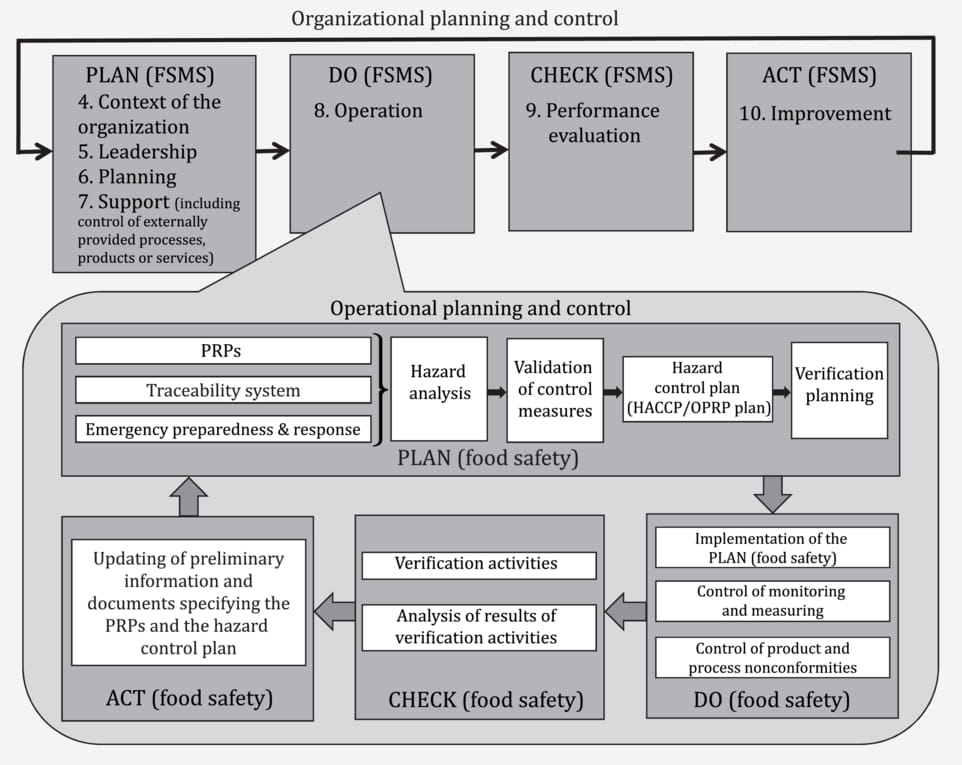
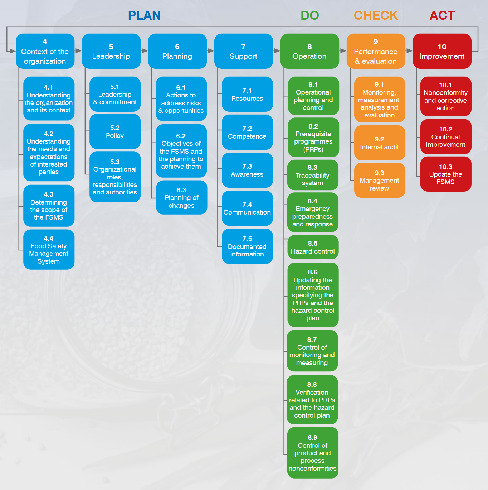

WORKSHOP APEC 2025
22-23 July 2025 | Pullman Legian Beach, Bali, Indonesia
Questionnaire
Slides
Presentation Manuscript
Notebooks
Food Safety Practices for Street Food Businesses in Other Countries/Regions
This quantitative descriptive study found that although street food vendors had high knowledge, their food handling practices were mostly inadequate, often conducted in open air and tents, and were negatively affected by limited resources like water and a healthy environment.
This cross-sectional mixed-method study of 340 street food vendors in Ghana found that while nearly all had good knowledge of food safety, effective training and licensing—rather than education level—were the strongest predictors of safe food-handling practices.
This study found that many street food vendors in Owerri, Nigeria operated under poor hygienic conditions—such as handling food with bare hands, not wearing aprons or hair coverings, and using recycled dirty water—which highlights the urgent need for targeted health education to protect public food safety.
This review highlights that while street food provides economic benefits in developing countries, its informal and unregulated nature creates significant health risks, which can be mitigated through integrated safety strategies like GAP, HACCP, and hygiene practices across the entire food chain, supported by strong public health policy enforcement.
This study at Tarlac State University found that while most street food vendors lacked food safety training and awareness of regulations, food was generally vended under relatively good sanitary conditions—with basic hygiene tools available—though pest presence remained an unresolved concern.
This cross-sectional study in Ghana found moderate compliance with food hygiene and safety practices among street food vendors, with notable regional disparities, strong adherence to medical screening, but poor use of protective clothing—further hindered by weak institutional capacity, inconsistent regulations, and overlapping responsibilities, highlighting the need for systemic reforms.
This study in Ambato, Ecuador found that while most street food vendors were knowledgeable about hygiene practices and reported consistent application, they perceived inadequate waste disposal and pest control services as key challenges to maintaining food safety, suggesting a need for improved infrastructure and targeted local government support.
This cross-sectional study in Florianopolis, Brazil found widespread noncompliance with basic food safety standards among street food vendors—such as lack of handwashing, poor cold storage, and absence of water access—highlighting the urgent need for vendor training and the development of targeted legislation to safeguard public health.
This cross-sectional study in Ghana revealed high awareness and generally good hygiene practices among street food vendors, but identified food storage methods and hand usage during serving as key risk factors—underscoring the need for continuous education and stricter policy enforcement to safeguard food safety.
This cross-sectional study in Mekelle, Ethiopia found that while most street food vendors had good knowledge, positive attitudes, and fairly safe practices regarding food safety, these practices were significantly influenced by factors such as education level, income, age, experience, and food safety training—highlighting the need for continuous, targeted training interventions.
PDCA FOR ISO 22000:2018


| PDCA Phase | Relevant ISO 22000 Clause(s) | Core Theme | Why It Belongs There |
|---|---|---|---|
| Plan | 4 — Context 5 — Leadership 6 — Planning 7 — Support |
Establish strategic direction, objectives, resources | You can’t run an experiment until you know the playing field, goals, and tools. |
| Do | 8 — Operation | Execute food-safety controls (PRPs, HACCP, traceability, withdrawal/recall) | This is where the planned controls actually touch the food. |
| Check | 9 — Performance Evaluation | Monitor, measure, audit, review | Confirms whether “Do” achieved the “Plan.” |
| Act / Adjust | 10 — Improvement | Corrective actions, continual improvement, FSMS updates | Locks in successful changes or launches the next PDCA loop. |
Clause-by-Clause Deep Dive
| ISO 22000 Clause | What It Demands | Typical Outputs | PDCA Value | Common Pitfalls |
|---|---|---|---|---|
| 4 — Context of the Organization | Identify internal/external issues, interested parties, and define FSMS scope. | Stakeholder map, scope statement, high-level risk register. | Gives the why and where for the Plan phase. | Scope too narrow (excludes contract packers, warehousing, etc.). |
| 5 — Leadership | Top management sets policy, roles, culture of food safety. | Signed food-safety policy, organization chart with authorities. | Secures commitment and resources to execute the Plan. | “Set-and-forget” policy with no visible leadership behaviour. |
| 6 — Planning | Risk & opportunity assessment, measurable objectives, planning of changes. | Detailed risk matrix, SMART food-safety objectives, change-control plan. | Converts high-level intent into concrete targets for the Plan. | Objectives not linked to business KPIs; risk assessment generic. |
| 7 — Support | Provide resources, competence, awareness, communication, documented information. | Training matrix, communication plan, document-control register. | Ensures the Plan has fuel (people, budget, info). | Training records exist, but competence never verified on the floor. |
| 8 — Operation | Implement PRPs, HACCP/OPRPs, traceability, emergency withdrawal, validation & verification. | CCP/OPRP monitoring logs, traceability records, recall procedure. | Core “doing”—the Do phase in action. | Controls designed well but not followed; poor record integrity. |
| 9 — Performance Evaluation | Monitor & measure processes, analyse data, internal audit, management review. | KPI trend charts, audit reports, management-review minutes. | Supplies evidence for the Check phase. | Data collected but never analysed; management review becomes formality. |
| 10 — Improvement | Handle non-conformities, corrective actions, continual improvement projects. | NC/CA forms, updated SOPs, improvement project charters. | Drives Act—either standardise success or launch next PDCA cycle. | Root-cause analysis superficial; fixes treat symptoms, not causes. |
Practical Example – Allergen Control in a Snack Factory
| PDCA | Example Activities & Records |
|---|---|
| Plan (4–7) | • Context: Rising allergen recalls in market. • Leadership: CEO issues “zero allergen cross-contact” policy. • Planning: Goal = <1 ppm peanut residue on non-peanut lines within 90 days; risk log updated. • Support: Budget for dedicated cleaning tools; operators trained in ATP swab method. |
| Do (8) | Run three production trials with revised cleaning SOP; collect swab data each run. |
| Check (9) | Analyse swab results: 0 ppm on 94 % of samples (goal met); audit verifies SOP adherence; management review agrees effectiveness. |
| Act (10) | Standardise new cleaning SOP; issue visual work-instructions; launch next PDCA to cut cleaning time 10 %. |
How to Use This Mapping
- Gap-scan: List your current documents/activities under each clause; highlight empty boxes.
- Align audits: Rotate internal-audit focus—Clause 4 this quarter, Clause 5 next, etc.—to keep improvement continuous.
- Twin PDCA mindset: Remember ISO 22000 embeds two nested PDCA loops—one for the overall FSMS (Clauses 4-7, 9-10) and one inside Clause 8 for hazard control. Make sure they talk to each other.